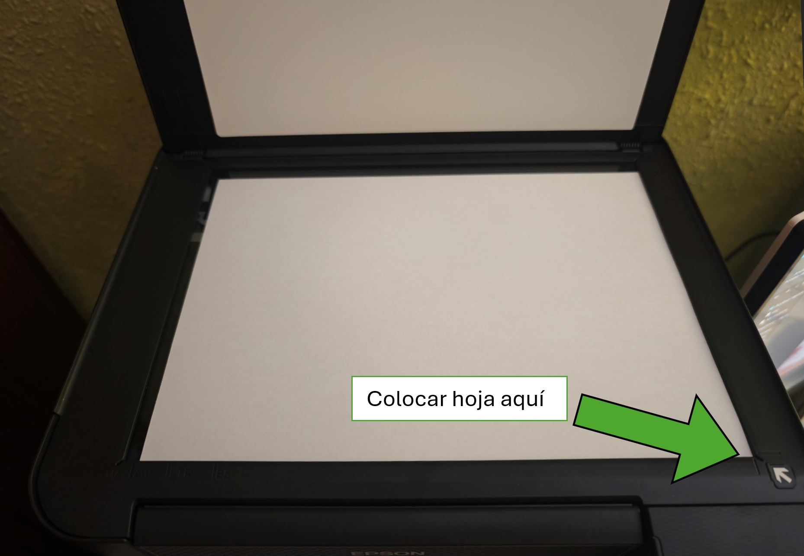
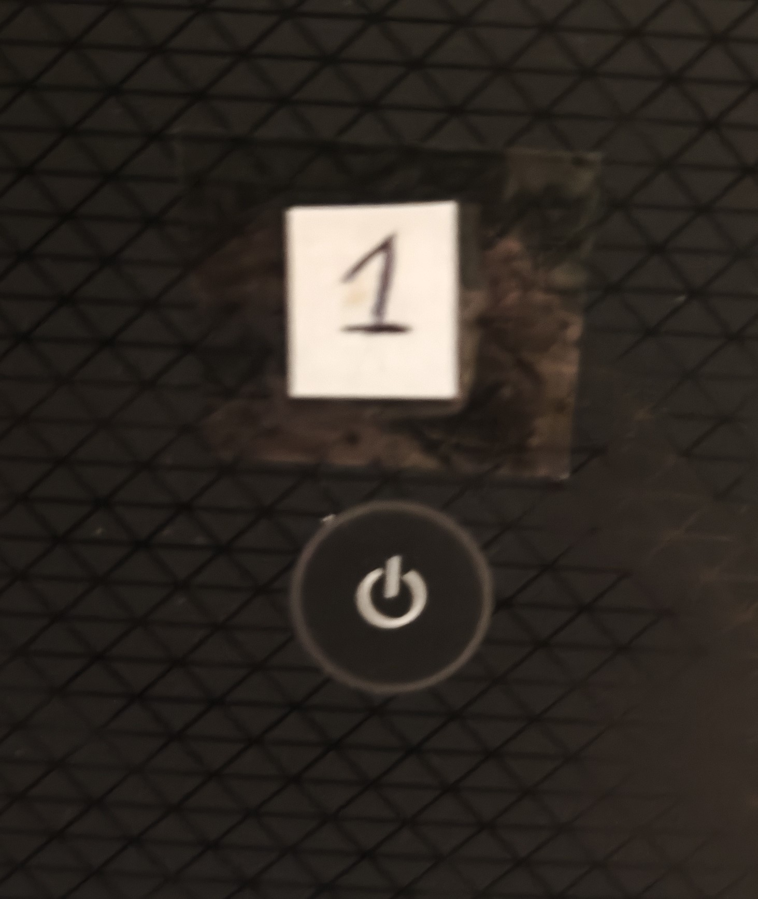
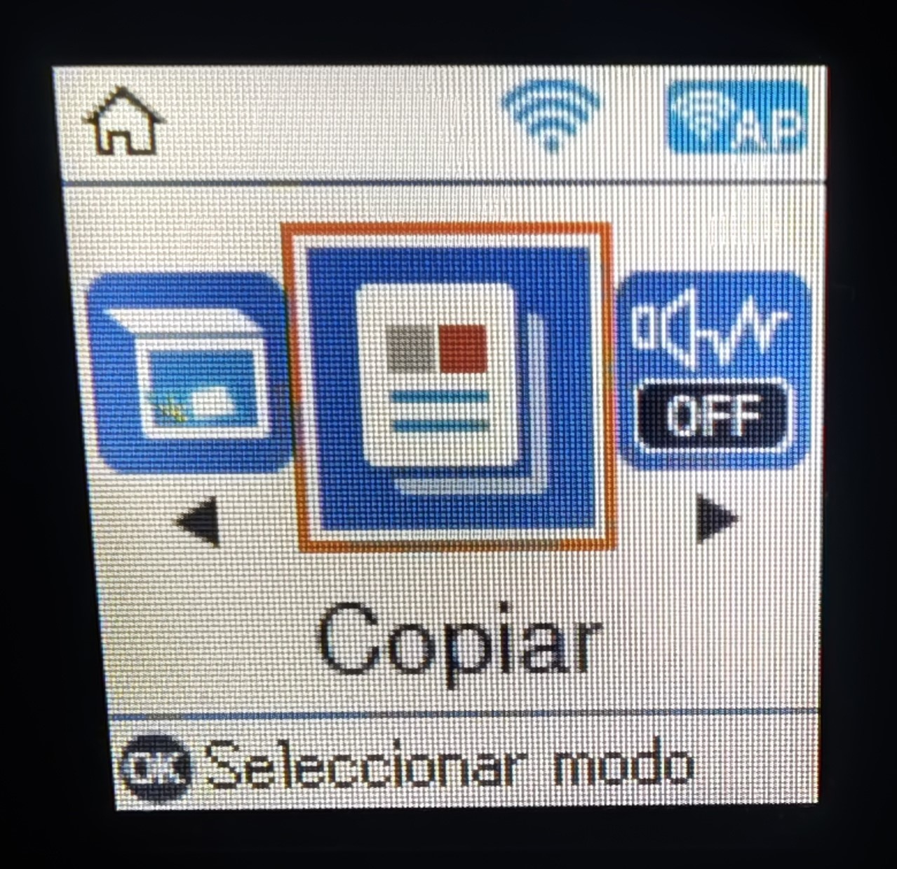
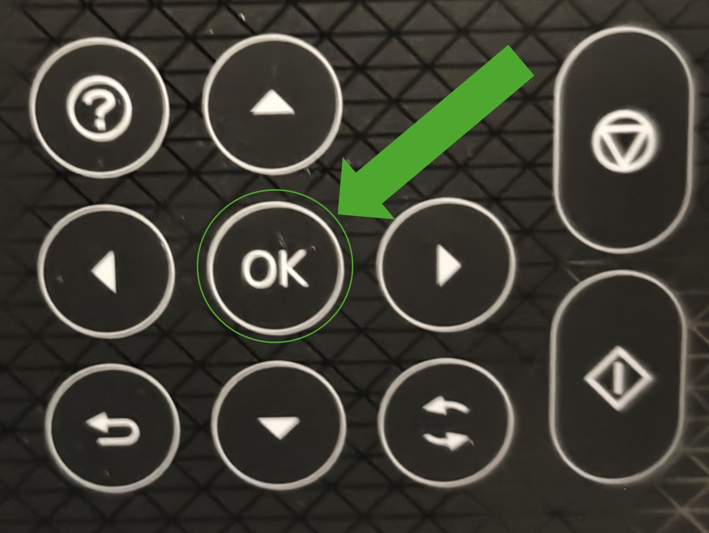
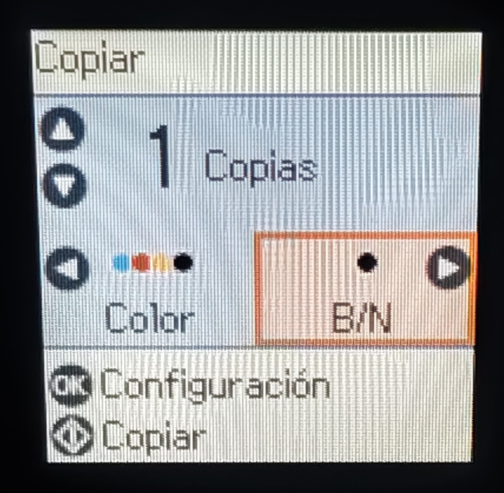
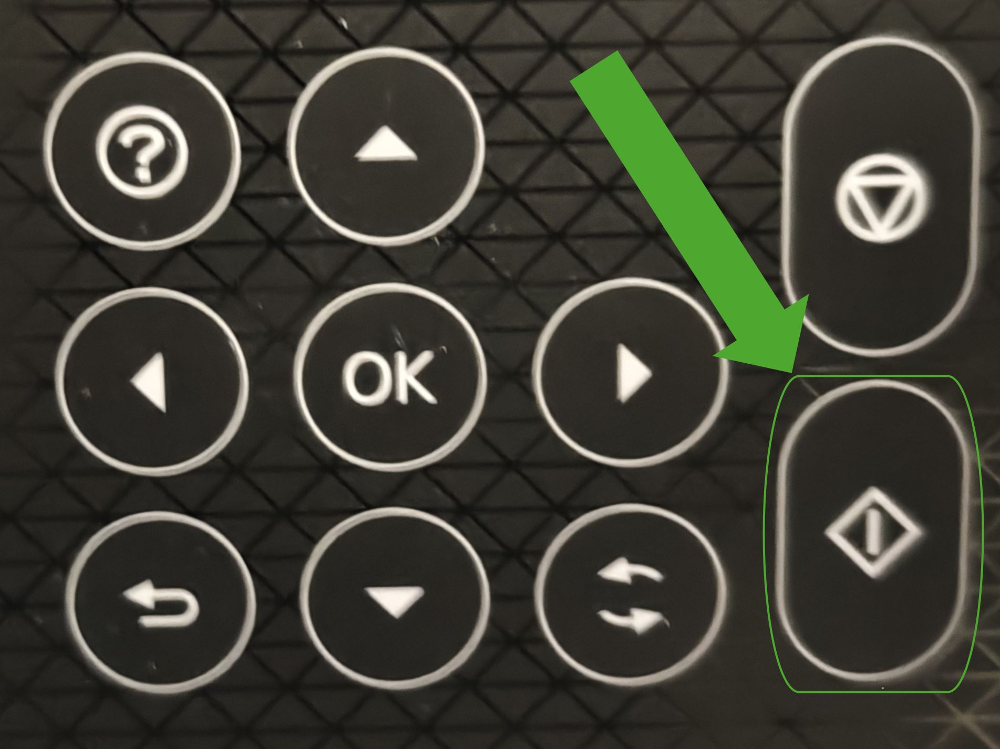

Levanta la tapa de arriba y coloca la hoja boca abajo (con lo escrito tocando el cristal), bien pegada a la esquina inferior derecha (abajo a la derecha).

2
Encender la impresora
Pulsa el botón de encendido en el panel frontal para encender la impresora.

3
Seleccionar "Copiar"
Al encenderse, la pantalla se pondrá por defecto en la opción "Copiar".

Pulsa el botón de OK para empezar a fotocopiar.

4
Ajustar y hacer la fotocopia
Aparecerá esta nueva pantalla:

Con las flechas verticales ▲ ▼ selecciona el número de fotocopias que quieres.
Con las flechas horizontales ◄ ► elige si la quieres en Color o en Blanco y Negro.
Cuando esté todo listo, pulsa el botón de copiar:

💡 ¡Y listo! Solo hay que esperar unos segundos a que la impresora saque las fotocopias por la bandeja de delante.
5
Apagar la impresora
Para apagar la impresora hay dos opciones:
Pulsar de nuevo el botón de encendido.
No tocar nada, ya que se apaga sola tras un tiempo sin usar.